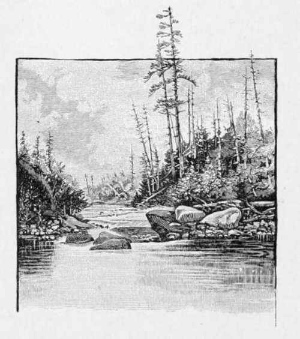

Black-Spotted Trout-Salmo Purpuratus. Part 4
Description
This section is from the book "American Game Fishes", by W. A. Perry. Also available from Amazon: American Game Fishes: Their Habits, Habitat, and Peculiarities; How, When, and Where to Angle for Them.
Black-Spotted Trout-Salmo Purpuratus. Part 4
"Why!" said the parson, "what on the earth are you doing that for?"
"I'm through," I said. "I've caught all the fish and had' all the glory I want to-day."
"But you surely are not going to quit fishing while you are in the presence of such lovely water and such glorious sport as this?"
"That's just it. I have had enough of it, and I could not think of breaking the charm cast upon my fancies, by killing that pair, with catching even one smaller and less noble Trout. I will go with you the rest of the afternoon, enjoy seeing you fish, and help you, if you need my services in any way, but for myself, 1 have had enough."
I had a good deal of difficulty in getting the big Trout into my creel, but by carefully curving him around, I succeeded. The parson had resumed operations, and just as I finished stowing away my reel and flies, he struck a large one, in the big pool, with which he had grand sport for some fifteen minutes. He finally succeeded in landing it, and when the tape-line was applied to it, it scored seventeen and one-half inches. Then we followed down over a succession of rapids for probably half a mile, to a point where the river made an abrupt turn and had cut a deep hole in the opposite bank. A shelving ledge of limestone projected out over this, and beneath it the water whirled and effervesced, flecked here and there with little balls of foam that came dancing down in a never-ending procession, from the foot of the rapid. ' "Look out for a big one there, parson."
"It does look promising, don't it?" and he made a skillful cast, his flies falling gently on the whirling water, well over toward the shelving rock. Instantly there was a commotion on the surface, and the form of a mighty Trout was seen to whirl upward and dart back under the rock. The parson struck at the proper instant, and settling the butt of his rod well forward, checked the rush of the fish slightly, when it turned and made a dash up toward the head of the pool. The parson gave him line, and he sailed through the water, with the speed of a carrier-pigeon through the air, until he reached the very foot of the rapid. Then he turned and made another dash for the hole under the rock. The angler reeled in his line as rapidly as possible; but the fish was too quick for him, and darted under the rock, leaving several feet of slack hanging loosely in the water. I shuddered lest it should foul on some projecting rock; but when it came taut again, it seemed to be clear. The Trout sulked for a moment, but the parson urged it; when it felt the twang of the steel in its jaw it came out again like an arrow, and this time went down stream. It took out the line rapidly, and before it could be safely checked was leaping and cavorting in the lower rapid, threatening destruction to the tackle.
I shouted to my companion to give him line and run down stream. The parson obeyed, but it took him some time to get over the rocks and logs that environed the pool, and when he did reach the foot of it the fish was seventy or eighty feet below him on the shoal, and still fighting like a wild cat. The parson plunged into the water and started down stream on a run, knowing that the only hope of saving his fish lay in gett.ing him into more quiet water. But he had only taken a few steps, when his foot slipped off a treacherous bowlder; he staggered, and tried to regain his footing, but the more he struggled the more his feet became entangled in the rocks; and at last he lost control of his movements entirely, and went down full length in two feet of icy water. I rushed to his assistance, but before I could reach him he had regained his footing and stood, half-strangled, gasping for breath, with the water running off him in torrents, but bravely hanging on to his rod, though his hat was being whirled away on the angry flood toward Puget Sound. I ran down-stream, waded in and intercepted it, and the plucky parson came staggering along with his fish still under fair control. As soon as it reached the next deep water, it began to circle, which enabled the parson to take up line as he came on down. He got a firm footing near the foot of the fall, and from that time on the fight was one-sided. The fish soon began to yield visibly to the pressure of the rod.
The parson handled him with rare skill, and soon had him completely exhausted. I was on hand with my landing-net, but my neighbor courteously declined my services, declaring that he must reserve that pleasure for himself. A few minutes later he deftly passed his own net under the now almost lifeless Trout and carried him ashore.
He was the very counterpart of mine, and not until we measured him could we determine any difference in size; then we learned that the parson's fish was a quarter of an inch longer than mine. The killing of this Trout had occupied, as nearly as I could judge, about twenty minutes, but the parson thought it must have been an hour.
He now took off his rubber boots, poured the water out of them, wrung his coat and vest, and as the sun was already behind the mountain we decided to go to the station.
The parson insisted that the memory of that day's sport should ever be one of the fondest of his life; and as for me, I have had few days that I recall with feelings of more genuine pleasure.
By G. O. Shields (Coquina).

Continue to:
- prev: Black-Spotted Trout-Salmo Purpuratus. Part 3
- Table of Contents
- next: The Channel Bass Or Red-Fish-Scioena Ocellata, (Gunther.)